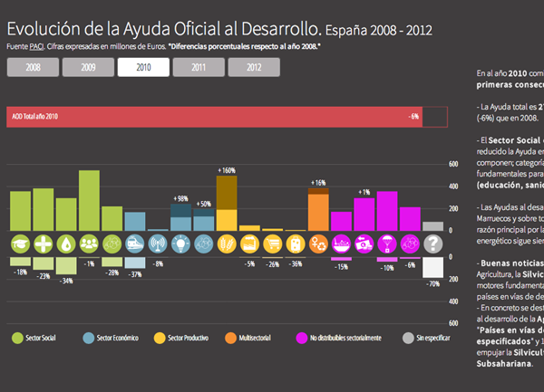

-
Official Development Assistance
Interactive visualization to explore how the different categories of the Official Development Assistance (ODA) have changed in Spain since 2008, when we had the highest ODA ever.
This visualization includes a brief analysis of what happened in each of those years.
Data analysis developed with R and visualization built with d3.js -
Where the MadMoney Goes

Built to analyze the consumer geographical behaviour and discover the relationship between buying outside/inside the neighbourhood and the presence of chain stores (such us Zara, El Corte Inglés, Ikea...)
The idea behind the project is to promote the proximity shopping by helping entrepreneurs to make decisions about which kind of commerce could make sense in the areas they are thinking to set up a business.
Both, data analysis and visualization were developed in R. -
Así nos vamos
Group project developed within the Madrid Data Journalism Work Group.
The objective was to reveal the truth about how many, where and who emigrates in the Spanish crisis scenario.
My work on this project involved the following tasks: data research, data manipulation, graphs and data selection, homepage design, website development on WordPress.
 mtnezb@gmail.com
mtnezb@gmail.com github.com/maritrinez
github.com/maritrinez